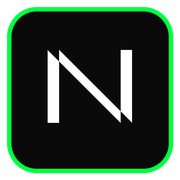

RAIL · V
v0.1.0-alpha · available now

A geometric display typeface built from parallel rails and 45-degree diagonals. No curves. No rounded terminals. Engineered, not drawn.

A geometric display typeface built from parallel rails and 45-degree diagonals. No curves. No rounded terminals. Engineered, not drawn.
Every stroke is 110 units wide. Every terminal is squared. One weight, one rhythm.
Diagonals are exactly 45 degrees. The generator asserts it and refuses anything else.
Glyphs are generated from declarative rules, not hand-drawn. The alphabet inherits one grammar.
Every Newell glyph is composed from the same vocabulary: a vertical rail, a horizontal rail, and a 45-degree diagonal. Squared terminals join them. There is nothing else.
The result reads as "engineered" rather than "drawn" — closer to a barcode or a circuit diagram than to a humanist serif.
More about the DNA →